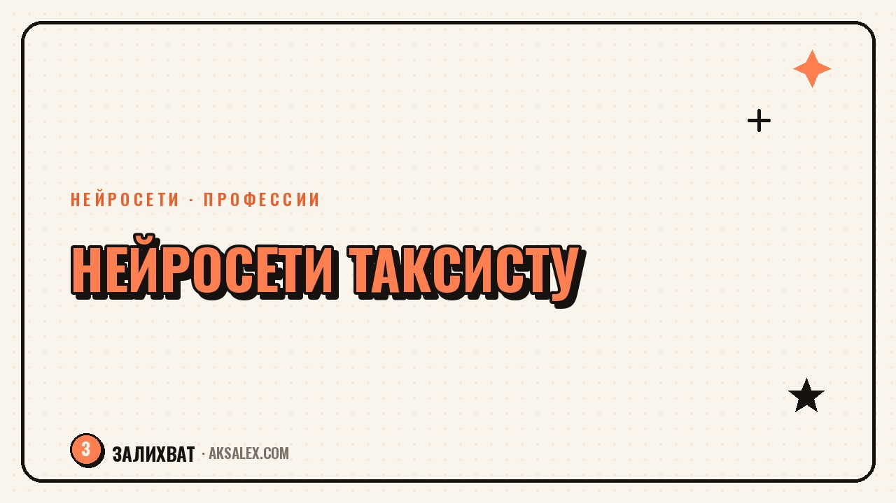

Нейросети для таксиста: заказы, маршруты и документы

Таксист целый день за рулём, а вечером ещё отчёты, звонки диспетчеру и переписка с пассажирами, которые не могут найти подъезд. Нейросети не заменят дорогу, но снимают часть рутины вокруг неё: помогают быстрее считать стоимость сложных поездок, разбираться в документах для агрегаторов и отвечать на отзывы без нервов. Разберём, что из этого реально работает и с чего начать, если ты за рулём, а не за компьютером.
Где нейросети реально помогают таксисту
Главная ошибка - ждать от нейросети, что она заменит навигатор или сама найдёт клиента. Она не для этого. Нейросеть пригодится там, где нужно быстро написать, посчитать или объяснить: составить ответ пассажиру, разобраться в пункте договора с агрегатором, прикинуть расходы на бензин за месяц.
Если смотреть на день таксиста, время уходит не только на дорогу. Утром нужно проверить документы и напоминания по страховке, днём - ответить клиентам в чате, вечером - свести доходы и расходы. Везде, где есть текст и цифры, нейросеть сокращает время в разы.
Что не стоит доверять ИИ
- Юридические вопросы с агрегатором - для серьёзного спора нужен юрист, а не чат-бот
- Точный расчёт налогов - нейросеть подскажет общую логику, но цифры проверяй сам
- Решения о безопасности на дороге - это всегда твой выбор и твоя ответственность
Маршруты и расчёт поездок: что умеет ИИ
Навигатор считает путь, но не объясняет пассажиру, почему поездка через центр дороже, чем через объездную. Нейросеть помогает за секунды составить понятное объяснение: сколько км, сколько времени, почему выбран такой маршрут, и отправить это в чат одним сообщением.
Второй частый случай - поездки с несколькими точками. Когда клиент просит заехать в три места, легко упустить логику и потерять время на телефоне. Голосовой помощник или текстовый чат-бот помогает быстро прикинуть порядок точек и примерное время в пути, пока едешь к первому адресу.
Короткий пример
Пассажир написал: «можно сначала к аптеке, потом к родителям, а потом на вокзал, успеем до 18:00?» Вставь это в чат нейросети с адресами - получишь примерный порядок и честный ответ, реально ли успеть, прежде чем отвечать клиенту.
Документы и бухгалтерия без лишней головной боли
У таксиста документов больше, чем кажется: договор с агрегатором, полис ОСАГО и такси, путевые листы, медосмотры, налоговые отчёты для самозанятых или ИП. Нейросеть не заменит бухгалтера, но объяснит сложный пункт договора понятными словами и подготовит черновик обращения в поддержку агрегатора.
Самозанятым особенно удобно: можно продиктовать нейросети доходы за месяц голосом между поездками, а она соберёт черновик памятки или объяснит, как считается налог на профессиональный доход. Финальную цифру и оплату всё равно проверяй в приложении налоговой.
Нейросеть - это второй комплект глаз для документа, а не замена здравому смыслу: она подскажет, на что обратить внимание, но решение всё равно принимаешь ты.
- Разбор непонятного пункта договора с агрегатором понятными словами
- Черновик претензии или обращения в поддержку
- Напоминание о сроках ОСАГО, медосмотра и техосмотра, если завести таблицу с датами
- Подготовка текста для самозанятости и чек-листа расходов на бензин и обслуживание
Общение с пассажирами: меньше конфликтов, больше рейтинга
Рейтинг в приложении напрямую влияет на доход: больше заказов достаётся тем, у кого выше оценка. Конфликтный или сухой ответ в чате может стоить звезды, а эмоциональный ответ на грубость пассажира - аккаунта. Нейросеть помогает составить вежливый, но твёрдый ответ за несколько секунд, когда злиться не время.
Это особенно полезно в спорных ситуациях: пассажир утверждает, что маршрут был длиннее нужного, или жалуется на опоздание. Нейросеть поможет сформулировать факты без эмоций и отправить их в поддержку агрегатора, не теряя время на подбор слов в сердцах.
Шаблоны, которые стоит держать под рукой
- Вежливый отказ от поездки по неудобному маршруту
- Ответ на жалобу про долгое ожидание
- Объяснение стоимости поездки с платной дорогой или через центр
- Благодарность за хороший отзыв - коротко и без шаблонности
Какую нейросеть выбрать: сравнение для таксиста
Выбор упирается в три вещи: нужен ли голосовой ввод, чтобы не печатать за рулём на светофоре, работает ли сервис без VPN и сколько стоит. Вот честное сравнение популярных вариантов.
| Сервис | Голосовой ввод | Нужен VPN | Для чего удобнее |
|---|---|---|---|
| YandexGPT (Алиса) | Да, через Алису | Не нужен | Быстрые ответы пассажирам, работает в привычных приложениях Яндекса |
| GigaChat | Да, в приложении Сбера | Не нужен | Расчёты и объяснения на русском, бесплатный лимит запросов |
| ChatGPT | Да, голосовой режим в приложении | Обычно нужен | Сложные формулировки, разбор длинных договоров |
| DeepSeek | Да, в приложении | Не всегда нужен | Бесплатная альтернатива для текстов и расчётов |
Для ежедневной рутины хватает бесплатного тарифа любого из этих сервисов. Платная подписка имеет смысл, если ты пишешь десятки ответов пассажирам в день или ведёшь документы для нескольких машин.
Как начать за один день
Не нужно осваивать всё сразу. Начни с одной привычки, которая экономит время прямо сегодня.
- Установи один сервис с голосовым вводом, чтобы не печатать за рулём
- Сохрани в заметках 3-4 готовых ответа пассажирам на частые ситуации
- Раз в неделю диктуй нейросети расходы и доходы, чтобы не забыть к концу месяца
- Один раз разберись с ней в непонятном пункте договора с агрегатором - дальше будет легче
Через пару недель такой привычки ты заметишь: меньше нервов в чатах с пассажирами и меньше забытых дел с документами. Это не революция в работе, а спокойная рутина, которая экономит реальные минуты между поездками.
Частые вопросы
Какая нейросеть лучше для таксиста?
Для начала хватает бесплатных YandexGPT или GigaChat - они работают без VPN и понимают голосовой ввод. ChatGPT удобнее для сложных формулировок, но часто требует доступа через VPN.
Может ли нейросеть посчитать налоги за самозанятого таксиста?
Нейросеть объяснит логику расчёта и подготовит черновик, но итоговую сумму и оплату нужно проверять в приложении «Мой налог» или у бухгалтера. Доверять ей финальные цифры не стоит.
Как нейросеть помогает отвечать пассажирам?
Она подбирает вежливую и короткую формулировку за несколько секунд, что особенно полезно в конфликтных ситуациях, когда сложно сохранить спокойный тон. Готовые шаблоны ответов удобно держать под рукой и подстраивать под ситуацию.
Безопасно ли пользоваться нейросетью за рулём?
За рулём безопасен только голосовой ввод без необходимости смотреть в экран, и даже его лучше использовать на светофоре или остановке. Набирать текст руками во время движения не стоит ни с нейросетью, ни без неё.
Стоит ли таксисту платить за подписку на нейросеть?
Для большинства задач достаточно бесплатных лимитов. Платная подписка оправдана, если ты ведёшь документы по нескольким машинам или отвечаешь десяткам пассажиров в день и экономия времени окупает стоимость.
Раз тема оказалась полезной, вот что почитать следующим. Разбираем, как организовать розыгрыш в блоге: от правил до оформления с нейросетями.
Читать статью →а не вручную